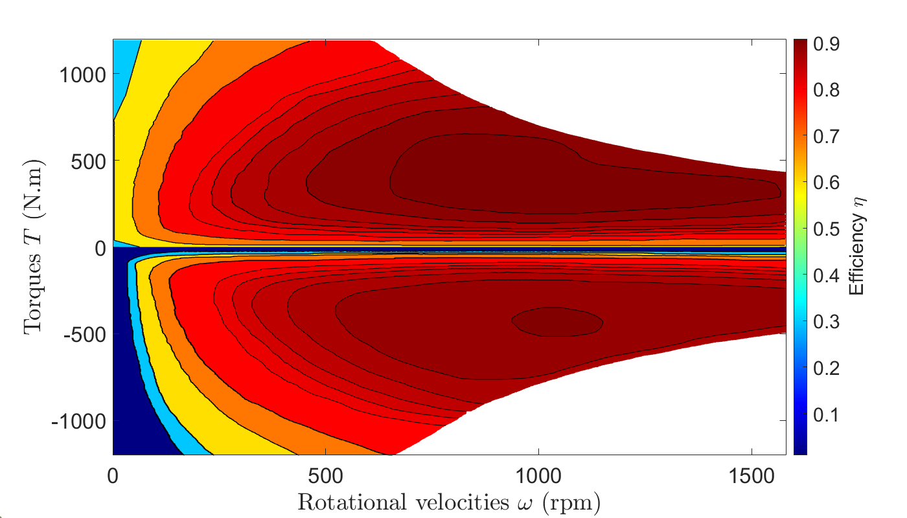
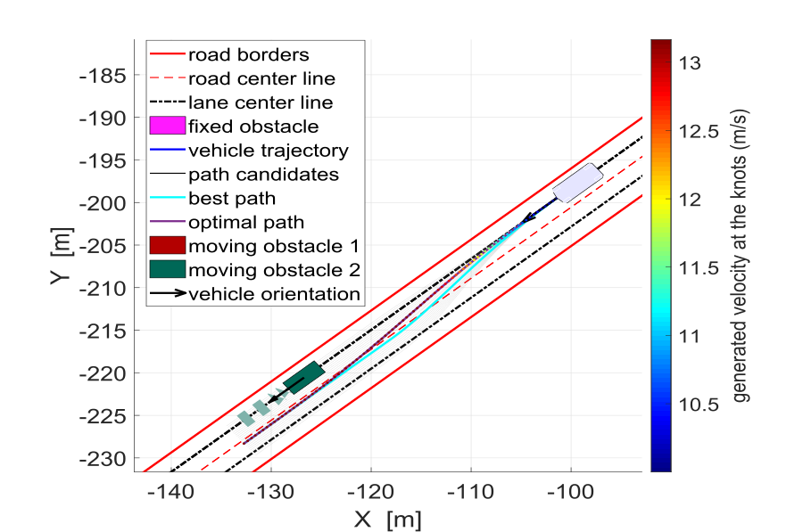
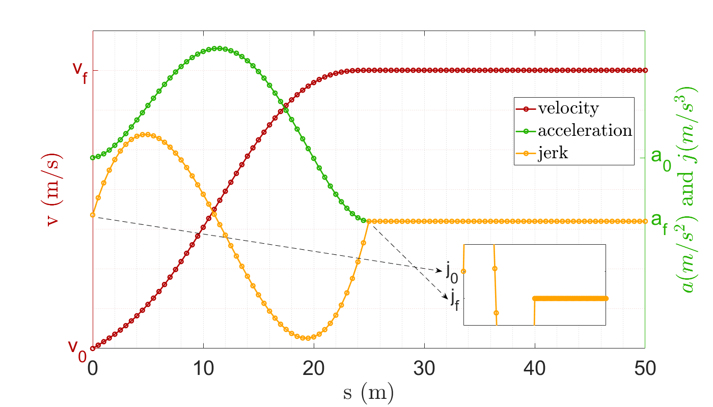
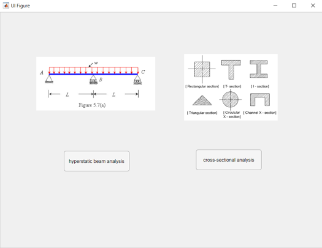
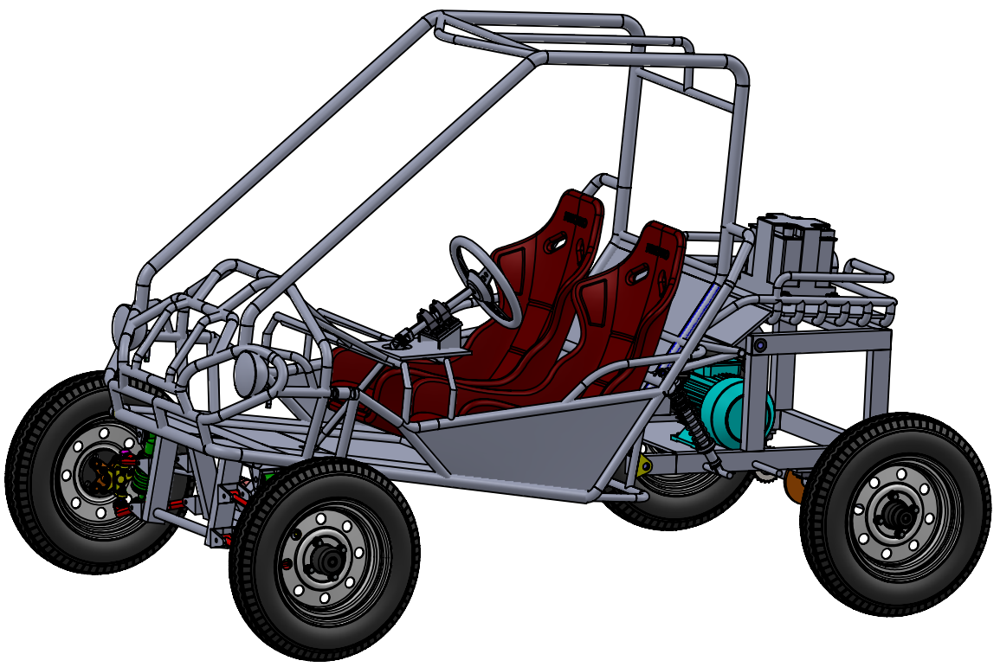
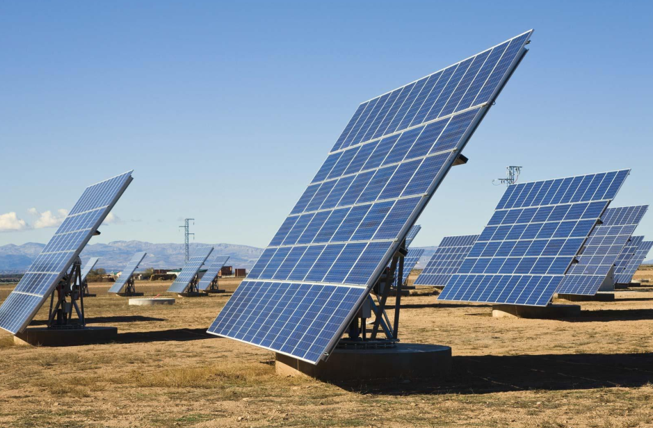
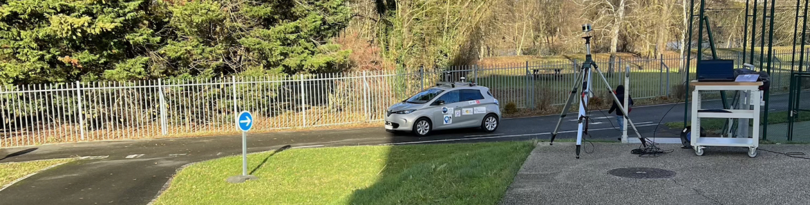
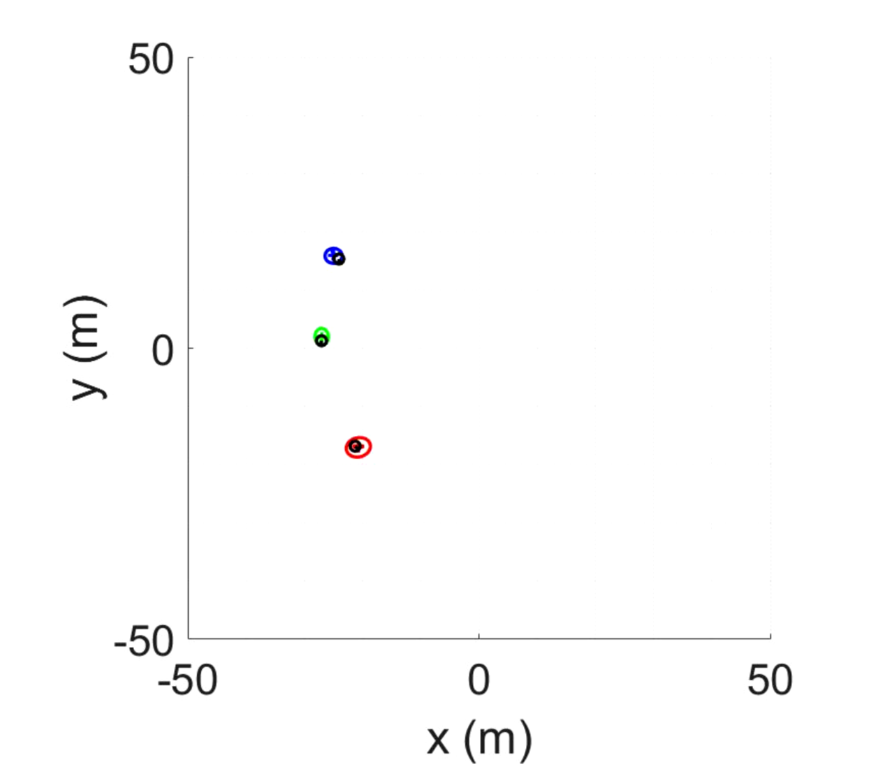
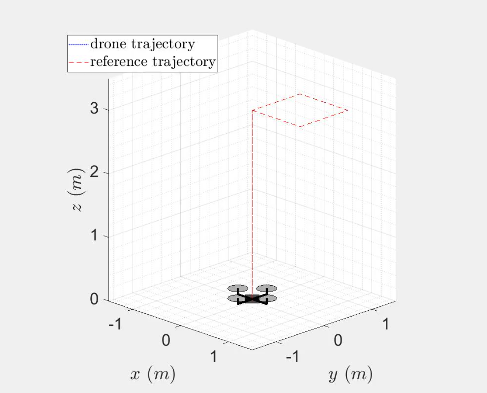

Hi there! I am a Ph.D. candidate at the Université de Technologie de Compiègne (UTC), France, specializing in decision-making, trajectory planning, and control systems for autonomous over-actuated vehicles. My research aims to achieve holistic energy economy across the entire vehicle architecture, from decision-making processes to actuator coordination.
My work has led to significant advancements in energy efficiency, high control performance, efficient control allocation, robustness to uncertainties, trajectory planning comfort and safety, and the integration of energy-conscious and safety-aware decision-making strategies.
I hold a diplome in Mechanical Engineering from the Lebanese University, Lebanon, and a Master’s degree in Autonomous and Robotic Systems from UTC, France. These academic foundations have provided me with a comprehensive skill set from design and system engineering to syntax and coding. Through coursework, research, and personal projects, I have cultivated a solid background in design, modeling, and dynamics, in addition to robotic systems navigation, localization, motion planning, decision-making, and advanced control.
Explore more about my research and publications in the tabs above.
I- Advanced Vehicle Control
A vehicle is a highly complex system with many variables, interconnected components, and nonlinear behavior, making its control a challenging task. To complicate matters, some key parameters are uncertain or nearly impossible to measure. This requires advanced control strategies that are robust to errors in the vehicle's model, adaptable to uncertainties, and capable of handling unexpected disturbances effectively. To manage this complexity, the control system is usually organized into two levels. At the upper level, the required control inputs—such as how the vehicle should move—are determined. At the lower level, these inputs are executed by the physical components of the vehicle, like motors and brakes. For vehicles equipped with four in-wheel motors (known as over-actuated vehicles), the lower level focuses on distributing the required torques among the motors. This process, called torque allocation, ensures the vehicle operates efficiently and reliably.
1) Upper-Level Control
The upper-level control is responsible for generating control inputs that correspond to some desired objectives. These objectives solicits the overall motion of the autonomous vehicle, like path-tracking, speed control, stability and handling control, rollover preventation, among others. To meet these objectives, the vehicle’s states are controlled to follow reference states generated as targets. The employed control techniques are numerous spanning linear, nonlinear, robust, and optimal control. In my research, the following control techniques are employed: Super-Twisting Sliding Mode control (STSMC), Linear Parameter Varying \((LPV)/\mathcal{H}_\infty\) Control, and Model Predictive Control (MPC). Key focus areas in my work include path-tracking, speed control, and stability control. The side video offers a brief overview on the developed work. Learn more about this work here and here.
2) Look-Ahead Distance
Path-tracking control is achieved by adjusting the vehicle's steering angle to align with a predefined reference path. The steering value is determined by minimizing the lateral displacement error between the vehicle and the reference path. However, due to the vehicle's non-holonomic constraints—meaning it cannot move directly sideways—this error cannot be minimized directly at the vehicle's center of gravity. Instead, control is applied to minimize the lateral error at a predictive target point positioned at a look-ahead distance from the vehicle. My research delves into the pivotal role of the look-ahead distance, exploring its impact on path-tracking accuracy, vehicle stability, and energy efficiency. Furthermore, it investigates how the look-ahead distance can be dynamically adapted to factors such as vehicle speed, road curvature, and road adhesion, ensuring enhanced performance across diverse driving conditions. Explore more about this work here and here.

3) Lower-Level Control
Over-actuated vehicles are innovative systems equipped with more actuators—like motors, brakes, or steering mechanisms—than are strictly needed to control their movement. In my research, the vehicle features four independent in-wheel motors. Why? This setup boosts flexibility in design, ensures rapid motor response, and enhances overall handling and stability. To translate high-level control commands into action, torques are applied to the motors in either traction or braking mode. With an over-actuated system, there are infinite possible ways to distribute these torques among the motors. So, how do we decide? It all depends on the objectives. In my work, goals like maximizing energy efficiency, ensuring the motors operate in high efficient zones, and maintaining tire stability are combined into a single cost function. An optimization problem is then solved to determine the ideal torque distribution across the four motors. Explore more about this research here and here.
II- Trajectory Planning
Trajectory planning is the critical process where an autonomous vehicle computes a safe and feasible route in real-time, accounting for obstacles, traffic, and other road conditions. In dynamic environments, this task becomes increasingly more sophisticated. The vehicle must not only navigate around moving obstacles but also predict the behavior and intentions of human drivers, adapting to constantly changing scenarios. Moreover, the planned trajectory must meet specific objectives, such as ensuring passenger comfort by creating smooth, non-jerky movements, adhering to road regulations, and sometimes prioritizing energy efficiency. Trajectory planning is typically divided into two key components: path planning, which determines the spatial route the vehicle will follow, and speed planning, which manages how the vehicle moves along that path over time. Together, these elements enable the vehicle to operate safely, efficiently, and comfortably in dynamic real-world conditions.
1) Path Planning
Determining a safe and feasible path in dynamic environments is a complex challenge. Why? It stems from the limitations of perception systems and the uncertainty in understanding other vehicles’ behaviors, drivers’ intentions, sudden obstacles, and the overall uncetainty in the environment. Achieving a globally optimal path is another hurdle. The search space is vast, and surrounding obstacles must often be simplified into specific shapes for optimization, not to mention the partial accessibility on the structure of the environment. Even after addressing these challenges, the quality of the path comes into question. How smooth is it? What is its curvature? And how close is it to being optimal? With the induced conservatism, absolute optimality is often impractical. In my work, a hybrid approach is employed. A map aids navigation in structured environments, and a set of polynomial paths is generated to follow the road curvature. Using an occupancy grid, non-navigable paths are identified and discarded. The best path is then selected based on a predefined cost function. To enhance optimality, the chosen path is further refined with energy economy as the primary objective. Learn more about this method here.
2) Speed Planning
Once a spatial path is determined, the next critical step is planning the vehicle's navigation over time. This involves generating a speed profile that considers surrounding obstacles, traffic conditions, and road characteristics. The safety of the overall trajectory (path + speed) heavily depends on speed adjustments, not just the path itself. For instance, maintaining safety might require precise acceleration or deceleration to avoid collisions with nearby vehicles. In more complex scenarios, predictive planning becomes essential, such as anticipating a potential collision zone involving multiple vehicles in the near future. The speed must then be carefully adjusted to bypass these critical areas safely. In my work, speed profiling is achieved using a quintic polynomial function of time. This approach enables control over the first and second derivatives of speed, ensuring smoother motion while improving comfort and energy efficiency. The criteria for speed planning consider various factors, including surrounding vehicles, road curvature, adherence, and gradient. Explore more about this approach here.
Journal Articles
[1] F. Tarhini, R. Talj and M. Doumiati,“Safe and Energy-Efficient Jerk-Controlled Speed Profiling for On-Road Autonomous Vehicles,” in IEEE Transactions on Intelligent Vehicles, 2024, doi: 10.1109/TIV.2024.3416551.
[2] F. Tarhini, R. Talj and M. Doumiati, “Dual-Level Control Architectures for OverActuated Autonomous Vehicle’s Stability, Path-Tracking, and Energy Economy,” in IEEE Transactions on Intelligent Vehicles, vol. 9, no. 1, pp. 287-303, Jan. 2024, doi:10.1109/TIV.2023.3333273.
[3] F. Tarhini, R. Talj and M. Doumiati. “Dynamic and real-time continuous look-ahead distance for autonomous vehicles: an explicit formulation”, in Vehicle System Dynamics, vol. 62, no. 9, pp. 2210–2236, 2023. doi:10.1080/00423114.2023.2280215.
Conference Articles
[4] F. Tarhini, R. Talj and M. Doumiati, “Hybrid energy-efficient local path planning for autonomous vehicles in dynamic environments”, 2024 IEEE 27th International Conference on Intelligent Transportation Systems (ITSC), Edmonton, Canada, 2024, hal-04651719.
[5] F. Tarhini, R. Talj and M. Doumiati,“Driving Towards Energy Efficiency: A Novel Torque Allocation Strategy for In-Wheel Electric Vehicles,” 2023 IEEE 26th International Conference on Intelligent Transportation Systems (ITSC), Bilbao, Spain, 2023, pp. 1022-1029, doi: 10.1109/ITSC57777.2023.10421905.
[6] F. Tarhini, R. Talj, and M. Doumiati, “Multi-objective control architecture for an autonomous in-wheel driven electric vehicle”. IFAC-PapersOnLine, 56(2):11470–11476, 2023, doi: 10.1016/j.ifacol.2023.10.436.
[7] F. Tarhini, R. Talj, and M. Doumiati, “Adaptive Look-Ahead Distance Based on an Intelligent Fuzzy Decision for an Autonomous Vehicle,” 2023 IEEE Intelligent Vehicles Symposium (IV), Anchorage, AK, USA, 2023, pp. 1-8, doi: 10.1109/IV55152.2023.10186791.
Engineering Projects
1) Structural Analysis App
→ Created a user-friendly application in MATLAB to provide advanced tools for structural analysis, with a focus on hyper-static beam analysis.
Click to expand.
- Key features of the app include:
i) Customizable Input: Allows users to define any number of hinges, forces, moments, and loads of various shapes.
ii) Precision Diagram Generation: Produces highly accurate shear stress and bending moment diagrams for hyper-static beams.
iii) Stress Distribution Visualization: Generates precise normal and shear stress distributions for a range of cross-section shapes, including circular, rectangular, and I-beams.
- This application combines technical accuracy with an intuitive interface, making structural analysis accessible and efficient for engineers and researchers.
Click to collapse.
2) Electric Buggy Design
→ Led the design and shop drawing process for an electric-powered buggy car, covering the entire vehicle development from initial concept to final assembly.
Click to expand.
- The project involved handling the design and assembly from scratch, including everything from small components like bolts and nuts to large components like wheels and pipes. Key highlights of the project include:
i) Component Design: Designed custom metal shapes to fit standard components such as bolts, nuts, bearings, and pipes.
ii) System Assembly: Designed and assembled critical systems, including steering and suspension, while calculating the required power specifications to select the appropriate motor.
iii) Material and Technology Selection: Chose the right materials and tools, including CNC machining, to produce precise shapes and components for the construction.
- This project showcases a comprehensive approach to mechanical design, incorporating both practical assembly skills and technical analysis to deliver a fully functional electric vehicle.
Click to collapse.
3) Sun-Tracking Solar System
→ Design and implementation of a solar tracking system that optimizes sunlight intake by rotating toward the optimal angle.
Click to expand.
- The system is modeled and simulated using Proteus and incorporates two Light Dependent Resistor (LDR) sensors, an ADC converter, a stepper motor, a keypad, and an LCD monitor. The programming is developed in MPLAB using low-level assembly language and deployed on a PIC18F458 microcontroller. Key features of the system include:
i) Dual operation modes: The system supports both automatic and manual modes, selectable via the keypad.
ii) Analog-to-digital conversion: Sensor outputs are converted from continuous analog signals to 8-bit discrete digital values and stored in microcontroller registers.
iii) Dynamic motor adjustment: If the difference between the two sensor readings exceeds a predefined threshold, the stepper motor adjusts its position toward the lower value. The motor angle is then displayed in real-time on the LCD monitor.
- This project highlights a practical approach to combining sensor technology, microcontroller programming, and motor control to achieve an efficient solar tracking mechanism.
Click to collapse.
Masters in Robotics Projects
1) Infrastructure/Road Perception
→ Evalutate the precision of an autonomous vehicle’s perception system by utilizing a LiDAR sensor mounted on roadside infrastructure.
Click to expand.
- The objective was to address situations where onboard LiDARs may be blinded or obstructed, leading to sensor data imprecision. The main tasks involved:
i) Data Collection: Collected data using static LiDAR sensor via Veloview, while adjusting parameters like angle, height, and orientation to find the optimal configuration for detecting pedestrians and vehicles in various scenarios.
ii) Object Detection: Employed a state-of-art algorithm to detect both the vehicle and pedestrian using data from static and vehicle-mounted LiDAR sensors, addressing issues like occlusion and sensor blindness.
iii) Measurement Calculation: Focused on extracting crucial metrics such as the position, orientation, and velocity of both the vehicle and pedestrian, with a key emphasis on calculating the distance between them during crossing events.
iv) LiDAR Evaluation: Evaluated the effectiveness and limitations of the infrastructure-mounted LiDAR method. The assessment determined whether the system could achieve the required precision or if additional sensors, such as cameras, would be necessary to enhance performance.
- This project highlights the use of infrastructure-mounted LiDAR to improve the reliability of autonomous vehicle perception systems, addressing challenges such as sensor occlusion and providing a more robust solution for accurate object tracking and positioning in real-world environments.
Click to collapse.
2) Cooperative Localization of Three Vehicles
→ Improve the state and covariance estimation of three vehicles moving around a roundabout using real-world GNSS and sensor data.
Click to expand.
- The primary objective was to address challenges in cooperative vehicle perception by using sensor fusion techniques and information exchange. Key aspects of the project include:
i) State Estimation Methods: Implemented three methods for estimating the states and their associated covariance for three vehicles. This included individual state estimation using an extended Kalman filter (EKF) and cooperative estimation using information exchange and covariance intersection.
ii) Sensor Fusion: Leveraged data from multiple sensors, including GNSS, LiDAR, and embedded vehicle sensors, to improve the accuracy and reliability of state estimation. This process is essential for autonomous vehicles to make informed decisions based on their environment.
iii) Cooperative Perception: Focused on the problem of information loops in cooperative vehicle perception, where vehicles share their sensory data to improve overall situational awareness.
- The project showcases the potential of cooperative perception and sensor fusion to improve the safety and reliability of autonomous vehicle systems, particularly in complex driving scenarios like roundabouts.
Click to collapse.
3) Quadropter Control
→ Design and implementation of control laws for a quadcopter, addressing the challenges of its non-linear dynamics and aerodynamically unstable nature.
Click to expand.
- The main goal was to develop control strategies that enable the quadcopter to track desired functions for its orientation and altitude. Key aspects of the project include:
i) Quadcopter Dynamics: Modeled as a six-degree-of-freedom, under-actuated system, with control strategies for vertical, horizontal, and rotational movements.
ii) Control Strategies: Various controllers were developed, including:
a) Backstepping Control: A recursive method to break down the system into subsystems, stabilizing each state progressively using a Control Lyapunov Function.
b) Nested Saturation and Feedback Linearization: Additional control strategies developed to further enhance performance and stability across different operating conditions.
iii) System Behavior Analysis: Analyze the dynamic behavior of the quadcopter system under various flight conditions, including the impact of non-linearities, aerodynamic instabilities, and the coupling between different rotational axes.
- The project showcases the development of effective control laws for quadcopters, addressing both their complex dynamics and control challenges, with potential for further improvements through optimization techniques.
Click to collapse.
Fadel Tarhini
Contact Me
⇩Feel free to reach out if you have any questions, collaborations, or just want to connect!
Download CV